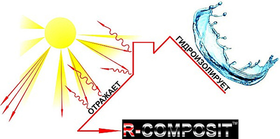

Инновационные экологически чистые строительные материалы
Гидроизоляция для кровли R-COMPOSIT и R-COMPOSIT FROST (для минусовых температур)
Покрытие для кровли R-COMPOSIT создано в качестве гидроизоляционного материала, который способен защитить кровлю от воздействия солнечной радиации. Битумное покрытие для кровли имеет чёрный цвет, что быстро приводит его в негодность. Материал для кровли R-COMPOSIT имеет белый цвет, что сокращает нагрев поверхности от воздействия солнечных лучей на 40%. Это полноценный гидроизоляционный материал для обустройства кровли.
Преимущества материала R-COMPOSIT становятся заметными в летний период, в помещениях верхних этажей жилых зданий, а также в помещения, которые имеют большую площадь кровли (промышленные здания, склады, торгово-развлекательные комплексы). Помещения в непосредственной близости с кровлей несут большие затраты на кондиционирование в летний период. С материалом R-COMPOSIT затраты на кондиционирование можно сократить на 40%. Температура нагрева кровельного материала R-COMPOSIT от прямых солнечных лучей ниже в 1,5-2 раза, чем с использованием битумных кровельных материалов рулонного типа.
Покрытие для кровель имеет высокую стойкость к химическому и биологическому внешнему воздействию. Материал R-COMPOSITпревосходно справляется с затоплением водой и обледенением, а также сохраняет эксплуатационные характеристики при температуре воздуха ниже -30°С и не разрушается при температуре нагрева до +120°С.

Кровельный материал R-COMPOSIT не нуждается в дополнительной облицовке и считается финишным материалом при обустройстве кровли. При ремонте кровли не требуется удаление старого рулонного покрытия, но при этом нужно удалить проблемные зоны (вздутые места и материал, который отслаивается). Основанием для нанесения материала R-COMPOSIT может быть шифер, черепица, металлочерепица, профнастил, фальцевая кровля, шинглас, отслуживший свой срок рубероид, бетонное основание, штукатурка и кирпич.
Материал R-COMPOSIT рекомендован для нанесения на поверхности сложных форм, с большим количеством инженерных коммуникационных систем: воздуховодов, труб вентиляции, антенн, кондиционеров.
Покрытие R-COMPOSIT при нанесении на старый кровельный материал образует глянцевый бесшовный ковёр белого цвета. Покрытие имеет высокую прочность с защитными свойствами, а также имеет отличную гибкость и эластичность под действием широкого диапазона температур и других внешних факторов. Кроме защитных свойств, благодаря цельному мембранному покрытию, кровельный материал R-COMPOSIT способен «дышать». Влага из атмосферного воздуха не проникает сквозь слой материала, но влага, исходящая со стороны кровли, может отдаваться наружу. Основание, покрытое данным гидроизоляционным материалом, всегда остаётся сухим.
Актуальным остаётся использование материала R-COMPOSITна поверхностях, которые могут быть подвижны или подвергаться деформациям в ходе усадки грунта. При обустройстве кровли из металла рулонные кровельные материалы могут иметь трещины не только по шву, но и по всему полотну покрытия. Это обусловлено тем, что металл и битумный кровельный материал в процессе нагревания имеют различные показатели расширения. Материал R-COMPOSIT может растягиваться до разрыва на 500%. Это значит, что основание кровли должно расшириться в 5 раз, чтобы покрытие R-COMPOSIT порвалось или дало трещину.
Гидроизоляционный материал для кровель R-COMPOSITявляется универсальным. Данный материал можно использовать при любых работах, где требуется использование битумных рулонных материалов. Белый цвет покрытия существенно сокращает затраты на кондиционирование помещений в жаркое время года, а также способствует активному отражению солнечных лучей. Кроме этого такое покрытие прослужит дольше, чем рулонные кровельные материалы на основе битума.
Защита от радона R-COMPOSIT RADON
Область использования и назначение R-COMPOSITTM RADON
Материалы R-COMPOSITTM RADON используютя:
- Для защиты помещений от проникновения радиоактивного радона;
- Защита от радона стяжек, фундаментов и перекрытий подвальных помещений и цокольных этажей;
- Для герметизации швов и стыков между конструктивными элементами зданий для защиты от проникновения радона;
- Для герметизации трещин и пустот, которые имеются в ограждающих конструкциях зданий;
- Для обеспечения герметизации проёмов для прокладки коммуникационных систем в подвальных помещениях и цокольных этажей.
Материалы R-COMPOSITTM RADON рекомендован для использования в детских и медицинских учреждениях, на предприятиях пищевой промышленности, в общественных и жилых зданиях, а также других объектах, которые нуждаются в противорадоновой защите.
Эти материалы предназначены для защиты от вредного радиоактивного газа - радон, а также других внешних геопатогенных факторов: воздействия природных и технических электромагнитных излучений и экологического воздействия.
Средство для борьбы с плесенью NANO-FIX MEDIC
Материал NANO-FIX MEDIC является современным и эффективным средством, которое позволяет бороться с вредоносной плесенью и проводить профилактические обработки различных поверхностей для предотвращения её образованию.
Пропитка NANO-FIX MEDIC является готовым к использованию продуктом на основе водного раствора антисептических препаратов. В состав материала не входят вредоносные компоненты, которые могут нанести вред здоровью человека и окружающей среды, но при этом являются эффективными в борьбе с плесенью и грибками. Также NANO-FIX MEDIC считается полезным в борьбе с различными инфекциями и бактериями.
Материал NANO-FIX MEDIC состоит из полимерных частиц размером 10-50 нанометров, что позволяет антисептику оставаться на поверхности многие годы. Этот раствор трудно выветривается и вымывается.
Антисептик NANO-FIX MEDIC не содержит в своём составе хлора и не обладает неприятным запахом.
Материал NANO-FIX MEDIC можно использовать как основное средство в борьбе с плесенью и грибками, а также в качестве добавки в различные строительные материалы и смеси: грунтовки, штукатурки, клеи, фуги и затирки для плиточных швов. Его можно использовать, как профилактическое средство от плесени в слабо проветриваемых и влажных помещениях.
Материал NANO-FIX MEDICможно использовать без особой подготовки и дополнительных средств. Достаточно ознакомиться с инструкцией по применению материала.
Антикорозийный грунт по ржавчине NANO-FIX Anticor
Материал NANO-FIX Anticor является атмосферостойкой, антикоррозионной грунтовкой-эмалью, которою можно использовать по ржавчине при её толщине 1 мм (100 мкм). Этот материал имеет аналогичные свойства с английским ЛКМ «Hammerrite».
В составе NANO-FIX Anticor содержится наноразмерный золь кремниевой кислоты и алюмозоль (бемит). Такие компоненты в составе материала NANO-FIXAnticor способствуют снижению содержания органических связующих и сохранению эластичности покрытия, а также увеличению слепливающих свойств (адгезии) к различным поверхностям. Кроме этого материал имеет достаточно высокую прочность, чтобы выдерживать статические и динамические нагрузки. Покрытие из материала NANO-FIXAnticor не даёт усадку при высокой концентрации сухого остатка, а также обладает высокой термостойкостью.
Грунтовка-эмаль NANO-FIX Anticor представляет собой инновационный материал, эффективно защищающий металлическую поверхность от коррозии. Это возможно благодаря сложному химическому взаимодействию молекул его компонентов с оксидами железа и атомами металлической решётки. Грунтовка NANO-FIX Anticor хорошо проникает в микротрещины и поры металла, что позволяет её эффективно справляться с коррозионными процессами на его поверхности. На поверхности металла образуются прочные хелатные комплексы с полимерной составляющей грунтовки, которые надёжно защищают металлическую поверхность от внешних разрушающих факторов. Материал NANO-FIX Anticor можно наносить на металлическую поверхность с ржавчиной, толщина которой не превышает 1 мм (100 мкм).
Антикоррозионная стойкость грунтовки NANO-FIXAnticorпозволяет значительно сократить затраты при подготовке металлических поверхностей под покраску, а также упрощает технологию обработки в труднодоступных местах. Кроме этого грунтовку по ржавчине NANO-FIX Anticor можно использовать как надёжное и прочное основное покрытие.
Грунтовка NANO-FIX Primer поможет окрасить даже алюминий
NANO-FIX Primer- грунтовка-концентрат, имеющая широкий спектр применения. После высыхания образует прозрачную блестящую поверхность. Обеспечивает лакокрасочным покрытиям высокую адгезию со всеми строительными материалами, в том числе цветными металлами, нержавеющей и углеродистой сталью, оцинкованным железом, пластиком.
Такая универсальность объясняется инновационным составом. Среди компонентов акриловые смолы, органические растворители, наноразмерные пластификаторы, модификаторы, алюминия метрагидроксид (бемит).
В результате получился грунт, который не допустит отслоения лакокрасочного покрытия даже от алюминиевой поверхности. А изделия из искусственного или натурального камня, покрытые NANO-FIX Primer, приобретут блеск и дополнительную прочность.
Защитные полиуретановые покрытия S-COMPOSIT
Большинство материалов, используемых при строительстве зданий и сооружений, требуют дополнительной защиты в виде специального покрытия. В противном случае резко снижается не только их внешняя привлекательность, но, что особенно важно, несущая способность. Это относится к ответственным металлическим, железобетонным и деревянным конструкциям.
Что происходит в условиях открытой атмосферы с этими материалами? Под воздействием солнечного света, высокой влажности, резких перепадов температур, несмотря на окрашенную поверхность, они покрываются трещинами, плесенью и высолами, корродируют и расслаиваются. Конструкции быстро стареют, теряют прочность, разрушаются.
Для предотвращения таких последствий компания «Инновационные технологии» создала защитную серию полиуретановых покрытий S-COMPOSIT, способных эффективно работать:
- на открытом воздухе, в том числе в экстремальных условиях морской атмосферы
- в агрессивной жидкостной среде
- в обстановке контактирования с нефтепродуктами, кислотами и щелочами
- в местах высокой проходимости
Серия включает 4 модификации, о которых будет рассказано ниже. Что их объединяет? Все они представляют собой высокостабильный полимер, поэтому абсолютно не опасны для человека и могут использоваться не только в условиях открытой атмосферы и в производственных помещениях, но и внутри жилых домов, общественных зданий, на предприятиях пищевой промышленности.
Общей отличительной чертой покрытий S-COMPOSIT является их высокая адгезия с обрабатываемыми материалами. Объясняется это наличием в их составе нано-частиц, способных проникать глубоко внутрь. Отсюда долгий срок эксплуатации защищенных конструкций. В условиях открытой атмосферы и контакта с агрессивной жидкостной средой - не меньше 15 лет, внутри помещений - 30-50 лет.
Особенности модификаций S-COMPOSIT сведены в таблицу.
|
Особенности модификаций |
S-COMPOSIT STANDART |
S-COMPOSIT CRYSTAL |
S-COMPOSIT CARBON |
S-COMPOSIT ZINC |
|
Цвет и внешний вид готового покрытия |
прозрачный желтоватый полуглянец |
прозрачный глянец |
черный глянец |
серый полуглянец |
|
Количество компонентов и состав |
однокомпонентная система |
двухкомпонентная система с отвердителем |
двухкомпонентная система с наночастицами |
двухкомпонентная система с наночастицами |
|
Специфические свойства |
базовая модификация с универсальными защитными свойствами |
наряду с высокой стойкостью к влаге, коррозии, износу имеет прекрасные декоративные свойства |
повышенная гидрофобность и химическая стойкость |
создана для защиты металлических поверхностей, идентична заводскому цинкованию |
Все составы S-COMPOSIT наносятся на поверхность при помощи обыкновенного малярного инструмента даже при отрицательных температурах. Отверждаются при взаимодействии с влагой воздуха или при введении специального агента-отвердителя. Требования к обрабатываемой поверхности абсолютно стандартные: она должна быть очищена и обезжирена.
Готовое покрытие представляет собой твердую и в то же время эластичную пленку толщиной 100-150 мкм, стойкую к ультрафиолету, температурным деформациям и механическим вибрациям, абсолютно гидрофобную.
Где применяются защитные покрытия S-COMPOSIT?
Рассмотрим этот вопрос отдельно для каждого материала.
1. Защита бетона, камня, тротуарной плитки
S-COMPOSIT востребован:
- для упрочнения бетонных полов складских помещений, цехов, ангаров, автосервисов
- для защиты гидротехнических сооружений, отмосток зданий, ступеней и тротуаров
- для реставрации и сохранения памятников, постаментов, архитектурных элементов
- для защиты бетонного основания и стен животноводческих комплексов, птицеферм, зернохранилищ
В этом случае применение полиуретановых составов укрепляет поверхностный слой, предотвращает попадание влаги в материал, обеспечивает высокую износостойкость покрытия. При этом обработанная поверхность не скользит и совершенно безопасна при передвижении.
2. Защита металлических конструкций
S-COMPOSIT будет незаменим для борьбы с коррозией:
- внутренних и наружных поверхностей трубопроводов, цистерн и резервуаров
- мостовых пролетов, ограждений, лестниц, кровли
- металлических узлов и деталей автомобилей, судов, железнодорожных вагонов
Прекрасная перспектива у S-COMPOSIT в плане защиты рулонного металла и жестяной тары.
Твердое и эластичное покрытие повысит стойкость к коррозии и химическому воздействию, обеспечит целостность поверхностного слоя при температурных деформациях и вибрациях. Причем для наиболее ответственных конструкций возможно последовательное применение сразу двух модификаций: S-COMPOSIT ZINC и S-COMPOSIT CARBON.
3. Защита деревянных конструкций
Полиуретановые составы будут востребованы:
- в деревянном домостроении при обработке стропил, лестниц, паркета, открытых террас
- в мебельной отрасли
Гидрофобность покрытий S-COMPOSIT и стойкость к ультрафиолету предотвратит коробление и образование трещин, уменьшит износ поверхности настилов.